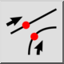
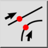
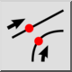
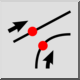

Afstand
Werkbalk / icoon:
 

Menu: Vang > Afstand
Sneltoets: S, D
Opdrachten: snapdistance | sd
Dit is een automatische vertaling.
Werkbalk / icoon:
 

Menu: Vang > Afstand
Sneltoets: S, D
Opdrachten: snapdistance | sd
Snapt naar punten met een bepaalde afstand tot het eindpunt van lijnen of bogen.